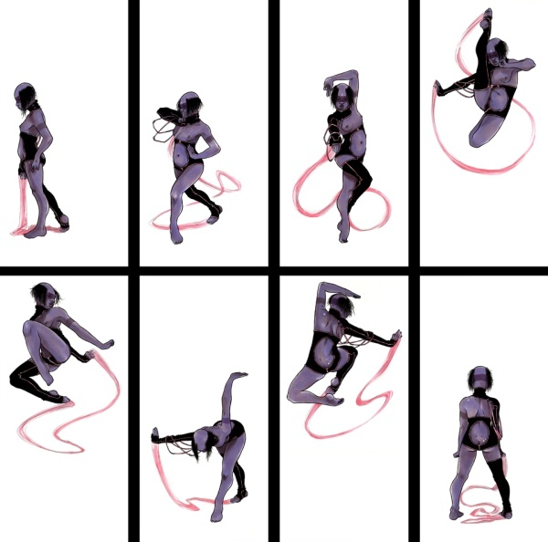

"From the times of the ancients, the way of martial arts has had five points. Practice, practice, practice, practice and practice. Well, what are you waiting for ? Go ahead !
Me ? It's my siesta time."
-- Favorite words of the Master
The Chinese, Japanese and Korean martial arts are the most well-known in the world, but people forget that these aren't just combat techniques. They are also ways of thinking, true "Arts", ways of life for the martial artist. Hints for living a better life are the last thing you expect to hear in this decadent age, neh ?
Battles overflow onto the street. Gangs without codes or morals struggle for the most meager scraps. Nomad packs fight for territory with corps who are at war with each other. Lovers fight with words while drunks swing empty bottles at each other. Not just Friday night, but every night of the week battles occur. Martial arts are simply techniques to defend yourself and/or win a street fight. They inflict much more damage than simple brawling. A master can kill with one strike; it's easier than cooking breakfast. These are the "fine arts" of conflict.
You thinking guns are easier ? Okay. When your gun jams, or breaks, or you drop it because your palms are all sweaty with fear, what are you going to do ? Panic ? Run away ? Can your simple brawling skills defeat that psycho with the BigRipps ? Those are the plans of a soon-to-be dead fool. These are the reasons why the clever solo learns martial arts. And if you join the military, they'll even pay you to learn !
Sure, nowadays anyone can buy martial arts skill chips. Have a nice day ! Even if you're some pasty wirehead, you can still swing nunchakus like the old action movie stars. If not, you can still have a chipped friend do it for you. Well, choomba, I have a message for you, don't underrate the old-style learning. I'm not saying that chips are useless. They were developed to suit a need. But, martial arts are not a trend, or performance. They aren't just "good moves". They are an Art. The Art of murder; the Art of survival.
For millennia, there was no concept of guns, or cyberware, or all we take for granted now. Martial arts were developed for a time when fighting was up-close and personal. Also, the martial artists were the doctors of the time. When you learn how to cripple someone, you learn anatomy, and how to fix what you break at the same time. Martial arts are also mental schools to learn patience and self-control. If you want to win, you must keep your cool, make good decisions under the worst of conditions. Desires and urges lead to panic and chaos, which are useless in a fight. Through control, you live longer and "healthier," even when casual. The old-timers call it "winning yourself".
If you study martial arts the old way, you hear this kind of boring preaching from your sensei. Chips never annoy you with mental effects. Mecha have no minds (eh... unless you include AIs, but an MA chip is a chip. They don't have the MU and CPUs needed for AI thinking). And someone with a mini-sensei plugged in their head is going to get wasted by a human using all of his mind, and maybe his 2 meters of muscle, too ! The reason arts are usable for killing and healing is the spirit of the artist ! You don't need to be tensed up 25 hours a day with control. Sometimes you ought to relax, too. But you must learn when to relax and when to be tense. The higher you get, the easier it is to recognize the when. If your patience gets lost, you'll either be hungry, or dead.
"On street, those like me permitted.
I'm a psycho; won't repress urges.
And you're a fool; love to murder.
We are a wild kind of brother."
-- Stormy Tyrant singer
Kisaragi Juri (lyrics translated from the Japanese)
Martial arts were born to serve a need : the need to fight and defend yourself. Many martial arts were created by those without weapons. In old Japan and China, peasants could be killed for owning swords, so they developed ways to kill without them. Capoeira was developed by Brazilian slaves in manacles. This is one reason why there aren't many martial arts from Europe. There, the peasants were expected to have weapons, and fight for their lords. Granted, they didn't have much armor... Fencing became the martial art of Europe.
They've evolved through trial and error (killing and being killed). But in the 20th century, many arts became sports; the moves were important, but not the thinking. Slowly, the old ways are returning. However, the main emphasis is still on killing techniques. People forget you can heal, too.
New styles are created every day. Some, like the Sovs and the Highriders, have already created new styles. But someday, martial arts created by Cyberpunks, for Cyberpunks, will be born. Will you be the one to do it ?
"Bodies are scientific; minds are wild."
-- Huribe Seishi, the creator of Kenkagei-Koppo
For such a small country, Japan has a lot of martial arts. It's like a martial arts heaven. Many exotic weapons such as katanas, shuriken, naginatas, kusari-gama, etc, come from Japan, and were developed from agricultural tools because of the strict weapons laws. Most Japanese will say that Sumo (fight for resist) is the oldest of their arts. This is almost true. The oldest is actually called Tegoi (pray with hands; to pray to the 8 million gods and goddesses for power). The arts started with two wrestlers in the old Japan, but the stories also say that the winner kicked the loser to death. Sumo don't kick. Tegoi was an all-purpose style, and allegedly, a master could kill a man in armor with one strike.
Deadly maneuvers (thrust, kick, punch) were forbidden under the laws, and Sumo became the art of grappling, although their ram can be quite deadly. This is the national sport now of Japan. The deadlier arts retreated to the shadows, and were called Koppo (knack of bones). This was used by the secret ninja clans. Recently, it was split into two branches. The ninjas, with their exotic weapons, use Ninjutsu (ninja tech)-Koppo, and Kenkagei (rumble arts)-Koppo, with bare hands. Both were secret until the 20th century.
From the 12th to the 16th century, in the Warring States period, quite a few other styles grew in the political chaos. Aikido (way of coordinating spirit) and Judo (the elastic way) were developed for self-defense. Weapon-oriented styles grew too, but weren't established as formal Budo (martial arts) until the 1600's. These include Kendo (swords), Kyudo (bows), Shuriken-jutsu, So-jutsu (spears), and so on.
Before the 1600's, Okinawa was a different kingdom, with its own language and culture. They had imported martial arts from China, and developed Te (hand) from the Chinese arts. Te was brought to Japan, and the Japanese developed Karate from Te.
"The two men stood opposite to one another. Each raised his foot and kicked at the other, when Nomi no Sukune broke with a kick the ribs of Kuyehaya and also kicked and broke his loins and thus killed him. Therefore the land of Taima no Kuyehaya was seized, and was all given to Nomi no Sukune."
-- Nihongi, Book VI (Suinin Tenno chapter). Suinin Tenno Year 7, Autumn, 7th month, 7th day.
The history of the martial arts in China is probably the longest in me world. Certainly its civilization is the oldest. Because of the vast size of China, it may have numerically more styles than Japan. But many arts rise and fall without leaving any physical traces. There is no obvious evidence of when martial arts developed in China. Maybe even from pre-history, hitting styles like Boxing and Karate, or grappling styles like Sumo were being used. This is like Sumo and Koppo, but much earlier.
Evidence points out that most modern arts are connected to the Shaolin temples. Shaolin Kung Fu was developed after exposure of the buddhist priests to the Indian arts, like Kalari. This is the root of the modern Choy Li Fut (named after the founder). Choy Li Fut is found mainly south of the Yangtze river, and so is a "southern style". Chinese southern styles focus on physical power, quickness and rapid combinations.
Tai Chi Chuan (pole of the whole nature) is also related to Shaolin Kung Fu. Tai Chi belongs to the "northern styles", and stresses personal power, balance of energy and the smooth flow from stillness to action, and vice versa.
Animal Kung Fu was developed around the 12th or 13th centuries; the origins are not clear. It has many substyles, using the actions of animals as a model. Some substyles are southern, and some are northern. The distinction between southern and northern is for convenience's sake. These are only the beginning point; the styles have been spread and changed throughout the world. The two streams unify at the master level. Beginners tend to focus on the stressed techniques of each style, but Masters use both southern power and northern balance for incredible effects.
There are probably many more styles, but there are just too many, and they aren't always clearly distinct from another.
"Like Nature, martial arts must also evolve."
-- Bruce Lee
"Bruce Lee was a real martial artist !
Sensei created Jeet Kune Do from the other Wushu and taught us the deadliness and virtue of Wushu ! Even though he was killed by Murphy's law at 32, he changed so much, by challenging things with all his power !"
-- Anonymous action cinemaniac
The best known Korean art is of course Tae Kwon Do. It was developed, finalized, and spread like wildfire all in the 20th century. The founder of Tae Kwon Do was inspired by Karate, but wanted to make something more practical and powerful than Karate. The true origin comes from Korean history.
In the old times, there were three kingdoms on the Korean peninsula : Koguryo, Silla and Faekche, all competing for dominance. Some texts say an art called Tekkyon was developed in 7th century Silla. Because of this art and the squad of young men called Hwarang-do, Silla, the smallest of the three countries, ruled the peninsula. After a while, Koguryo powered-up, and reconquered the land. Silla fell, but Tekkyon never really died. It was systematized and redeveloped in the 1950s as Tae Kwon Do.
Martial artists were doctors in the old times, too. Many, if not most, of your Chinese doctors are masters. Shaolin Kung Fu was developed by priests, who are doctors and morticians even now. The master of Kenkagei-Koppo in the 1900's wrote many books about practical techniques, Koppo-Chiropractic and hygiene.
Martial arts are techniques for doing damage to someone and blocking damage from someone effectively. How to hit and break bones, and how to keep yours from being broken. For this, you need (or soon learn the painful way !) a good understanding of anatomy. From this, you can be awakened to Wushu and the Way of the Universe. Understand, kaibi ?
"Damn cyberware ! Humans can trash mech by hundreds of techniques, using martial arts !"
"That's right. And if you martial artists cybered up and chipped in, you'd be that much stronger, theoretically."
"Er... eh.. to... that's... but..."
-- Stormy Terror and Shino-Migiude (Death's Right Hand), Osaka, Japan
There are two types of hand-to-hand combat in FNFF : Brawling and Martial Arts. Brawling is any type of non-trained streetfighting. You clobber another guy in the bar. Two kids scuffle in the schoolyard. Any time when the participants have had no formal training in a martial art or fighting form, it's Brawling. Experience is gained the hard way, by getting in a lot of fights.
On the other hand, any time the participants have had some kind of training, they are considered to be using Martial Arts. This would include any type of trained fighting : Boxing, Kung Fu, Karate, Savate... anything that requires training and study.
Why the distinction ? Martial artists are trained not only in how to make attacks but also in how to cause the most damage. Rarely, if ever, does a schoolyard bully kill his victim with a punch. But a well-placed chop to the throat, or a boot to the head, can easily kill someone. You just have to know how to do it. As a result Martial Arts attacks are much deadlier than Brawling attacks. In addition, they become deadlier still as a martial artist's level of ability goes up.
Remember, all Hand to Hand combat uses this formula :
ATTACKER :
REF + SKILL LEVEL + BONUSES/PENALTIES + 1D10
vs.
DEFENDER :
REF + SKILL LEVEL + BONUSES/PENALTIES + 1D10
The side with the greater total wins, and if there's a tie, the defender wins.
You learned an martial art style, huh ? Okay, write down your skill level on your hardcopy so you don't forget it. You can add this martial art level to the damage in appropriate key attacks (see below). Also, you add damage depending on your Body strength.
Say you have Martial Arts : Capoeira +10, and you have gone 'borg enough to have a body of 15. If you have Hydraulic Rams in your cyberlegs, your basic kick damage is 6D6 (cyberleg kick of 2D6 x3 for Rams). You have an average damage of 39 points and a max of 54. If you should happen to have a Spike Foot as well, add 2D6 more damage...
Not all martial art attacks have damage bonus. Crush has no bonus; since this comes with cyberhands it's not an martial art attack. Defensive maneuvers like Parry, Dodge or Escape also get no damage bonus, of oourse. If you use your martial art skills to throw an object, your Damage Bonus is halved (see below).
| Body | Hand to hand | Cast weapon |
| 2 | -2 | -1 |
| 3-4 | -1 | -1 |
| 5-7 | +0 | +0 |
| 8-9 | +1 | +1 |
| 10 | +2 | +1 |
| 11-12 | +4 | +2 |
| 13-14 | +6 | +3 |
| 15+ | +8 | +4 |
| Key attack | +lvl * | +lvl * |
* Level of martial art skill.
See the Martial Arts Form & Specialization table and check out your styles. There are (+) numbers at some maneuvers like Punch or Kick. These are key attacks, the tones of the style. Numbers are To-Hit bonus. For example, Karate has key attacks in Punch, Kick, Disarm and Block. These are the important attacks for Karate users.
There are thirteen maneuver categories in hand to hand combat. Within these thirteen, maneuvers with positive numbers are the key attacks for that style. If the maneuver isn't a key attack in your particular style, you can still try it, but get no bonus in either To-Hit or Damage.
Examples : someone with Boxing +5 tries a punch. He adds +3 (key attack bonus) to hit, and +5 and his Body Damage Modifier. If he tries a kick (say, his arms have been shot off...), the only bonus he gets is his Body Damage Modifier. A Tae Kwon Do master gets all of her modifier for both punches and kicks, but not for Rams. A Brawler can try anything, but only gets his Body Damage Modifier.
If you are a martial artist, your key attack also gets some special effects. Read on !
Like missile weapons, there are ranges at Hand to Hand combat. The longest is Casting Range, medium is Hitting Range and the shortest is Grabbing Range.
Hitting Range is the distance in which you can hit someone with a melee weapon. Some weapons such as Naginatas have a longer reach, around two meters.
Casting Range is the distance beyond where you can hit them with a hand-held weapon. You have to Cast (throw) a weapon to nail them.
Grabbing Range is where you can punch or grab them.
Each range has key attacks that fit it (see below). If there is no key attack listed at that range, you can't do it. Some key attacks are split as to what you use, such as Jump Kick (Kick) and Polearm Strike (Strike) that use the bracketed column in the Form & Specialization table.
| Range | Modifier | Key attacks possible |
| Casting | -0 | Block, Dodge, Jump Kick |
| various | Cast, Ram | |
| Hitting | +5 | Polearm Strike |
| +3 | Normal weapon Strike | |
| -0 | Punch, Kick, Disarm, Sweep, Block, Dodge, Ram | |
| -3 | Grapple | |
| -5 | Cast | |
| Grabbing | -0 | Disarm, Grapple, Throw, Hold, Choke, Escape |
| -3 | Punch, Kick, Sweep, Block | |
| Dodge | -5 | Normal Strike |
Some martial arts styles are created for opponents who are wearing clothes or armor on their upper body. Thus, if an opponent is naked from the waist up (a full borg cannot be grabbed like clothes), those kinds of martial arts have no (or less) effect. They are -5 for all attacks except Strike, Punch and Kick against these opponents.
Clothes-based styles : Judo, Sambo.
For example, Japanese Yakuza throw off their shirts/jackets for hand to hand combat for two reasons.
1) It prevents Judo holds and chokes, and
2) The flashing of their tattoos helps frighten opponents. They get +3 to Face-downs.
Also, if you're Yakuza, don't forget to wrap your abdomen in tight bandage wraps. Why ? To prevent your guts from spilling in the street if you get stabbed in the belly by your opponent.
This is an attack maneuver using a martial arts weapon. To know which weapons are usable with which style, see the Melee Weapons page.
Skills for Strike attack : Martial Arts, Fencing (blades) or Melee (blunt and impromptu weapons). Impromptu weapons are items that can serve as weapons in times of extremity, like bottles, bats, frying pans, etc. Weapon stats are up to the GM.
Bonuses/penalties for Strike :
+ STRIKE KEY ATTACK + WEAPON ACCURACY
Strike includes the Cast attack maneuver. Cast is used for Bows & Throwing weapons like shurikens, darts and spears. To use Cast weapons, use the firearms target numbers. But if defenders are martial artists and they make an Awareness roll, they may be able to Dodge or Parry the Cast weapon. If so, the Cast attack becomes an opposed task like melee. Remember to add your range penalties.
Skill for Cast attack : Martial Arts, Archery (bows) or Athletics (throwing objects).
Bonuses/penalties for Cast :
+ STRIKE KEY ATTACK + WEAPON ACCURACY + RANGE PENALTY
| Range | Penalty |
| Hitting | -5 |
| Close | -0 |
| Medium | -5 |
| Long | -10 |
| Extreme | -15 |
Normally, humans have four weapons : right & left hands, right & left feet. The basic Punch damage is 1D6/2, and Kick damage is 1D6. Cyberlimbs add to this damage : normal Cyberlimbs are 1D6 Punch / 2D6 Kick, Thickened Myomars are 2D6 / 4D6 and Hydraulic Rams are 3D6 / 6D6. See the Martial Arts Weapons section for more about cyberlimbs and options.
Cyberpunk 2020 said that if you use two weapons together, you must add a -3 penalty for both. Brawling is included in this, but martial arts are excluded. For example, Boxing uses a left feint jab to attack with a right hook. If you learn the martial art of Boxing, with hard practice you neutralize the penalties. Yes, martial arts with Punch key attack can use both hands to punch with no penalty; Punch includes jabs, elbows, knitehand chops, open palm slaps, etc. See the Forms & Specializations table for a listing of the styles.
What about Kicks ? Can martial arts with Kick key attacks use both feet to kick with no penalties ? Usually not. Most of the kicking martial arts execute a three-part combination attack of a feft Punch, right Punch and Kick, in theory. With both feet in the air, you drop to the ground (watch a wrestling drop-kick sometime), but as with all things, there are exceptions. There are four styles that can use both feet at the same time, with no penalties.
Styles using both feet to Kick simultaneously : Savate, Capoeira, Tae Kwon Do, Thai Kick Boxing.
In this rule, both hands or both feet attacks are regarded as one action. But a Punch - Kick combination is not. If you want to use a Punch and a Kick together in the same round, apply the -3 penalty to the second action, as per the multiple action rule. You cannot combine the four attacks with no penalty, even if you are the god of Capoeira.
Also, weapons attached to the fists/feet (Brass Knuckles, Spiked Boots, Cyberhands) can use this key attack with no penalty. If they are held in the hand (Knives, Clubs, etc) and can be dropped, they are used as per Strike.
Skills for Punch/Kick attacks : Martial Arts, Brawling.
Bonuses/penalties for Punch/Kick :
+ PUNCH/KICK KEY ATTACK + WEAPON ACCURACY (of attached/fitted weapons)
On a successful roll, you knock or remove a weapon from your opponent's hands. The attacker declares he's attempting a Disarm attack. He adds his Martial Arts/Brawling, etc skill to his REF stat and a D10 roll. The GM could add a size penalty to his roll (small target -4, tiny target -6).
If defender is in All-Out Parry (see below), attacker gets +6 bonus.
If defender is in All-Out Dodge (see below), attacker gets -3 penalty.
If you have no Disarm key attack (Brawling, Sumo, etc), you add the defenders Body Damage Modifier to the To-Hit roll. It's harder to disarm some strong guy with a heavy grip.
The defender adds Dodge & Escape, Athletics or Martial Arts (Dodge) to his REF stat and a D10 roll, but he can't use Fencing or Melee, since he's not trying to parry with his weapon.
Skills for Disarm attack : Martial Arts, Fencing, Melee, Brawling.
Bonuses/penalties for Disarm :
+ DISARM KEY ATTACK (or -BT Damage Modifier) + Attacker's WEAPON ACCURACY (if a weapon is use for Disarm) + Defender's WEAPON SIZE PENALTY
Compare the attacker's and defender's results; if the attacker's is larger, the defender takes no damage, but loses the weapon. Note : attached, fitted, implanted, etc weapons that are not hand-held cannot be the victim of a Disarm attack. Try to take away someone's Wolvers or Spiked Gloves, and you'll see what we mean.
| Weapon | Penalty |
| Normal : rifle, sword | -0 |
| Small : pistol, SMG, knife | -4 |
| Tiny : Shuriken, Derringer | -6 |
Knock your opponents to the ground by using your feet. He'll suffer -2 to attacks until he stands (taking one action); you'll gain +2 to yours. But once he's down, you must wait for him to stand up, in order to sweep him again. Of course, you can always kick him when he's down...
If you also have a Kick key attack you can make a Sweeping Kick at a -3 penalty. The To-Hit roll is Sweep (not Kick). On a successful Sweep (-3) roll, you do damage of 1D6+3, plus they make a stun roll at -2. If you have cyberlegs, you use the cyberleg kick damage +3 (ex : Hydraulic Rams do 6D6+3 for Sweep Kicks). You get the regular Sweep/Trip bonuses as listed below, too.
Skills for Sweep/Trip attacks : Martial Arts only.
Bonuses/penalties for Sweep/Trip :
+ SWEEP KEY ATTACK + WEAPON ACCURACY BY WEAPON (Hanbo, Bo, etc)
Block/Parry is a maneuver to intercept your opponent's attack using your weapon, or your hands and feet. This is different from Dodge, because you actually contact their weapon. Dodge is total avoidance of contact. Block is good for those tight spaces where you have no room to dodge. You must declare which weapon you are using to Block/Parry with before you do it : sword, left hand, right foot, jitte, etc.
Skills for Block/Parry defense : Martial Arts, Fencing (blades), Melee (blunt and impromptu weapons), Brawling (hands and feet).
Bonuses/penalties for Block/Parry :
+ BLOCK KEY DEFENSE + WEAPON ACCURACY (if used)
On a successful Parry roll, you can neutralize damage because of weapons and/or armor. But you must check your parrying item to see if it shatters. If it is an edged weapon, roll a D10 and check the table below :
| Parrying item | Break on a D10 |
| Normal edged weapon | 1 |
| Mono-Two * | 1-2 |
| Normal Monoblade | 1-4 |
| Powersword * | 1-5 |
* See Chrome 1, page 55.
If it is not an edged weapon, and has an SDP value (and SP like cyberhands and tabletops), the parrying item takes damage first. If it has no SDP, you must calculate the PP (Parrying Points). PP is equal to the maximum damage the weapon would normally cause (Tonfa causes 3D6 damage and has 18 PP). If it is a ranged weapon, use the table below :
| Parrying item | PP |
| Blowgun | 0 |
| Bow | 5 |
| Pistol | 10 |
| SMG | 15 |
| Rifle or shotgun | 20 |
These types of weapons can block the damage equal to the PP. If more damage is inflicted (ex : my kick would cause 20 points against the Tonfa), the extra damage is taken by the weapon, and Parrying weapon's PP is reduced by the number of points of excess damage. The weapon shatters when the PP is reduced to 0. In this case, it is no longer useful, and you or your armor takes the damage.
Even on a failed Parry roll, or when your weapon shatters, you can reduce the damage. Martial arts masters can move that extra bit of a razor-thin margin to save their hides. If your style has a Block key defense, your armor takes damages, and the rest of the damage is reduced by the level of your Martial Arts skill. Then apply the BTM for your final state.
Example : Rimbo was attacked in her apartment by a squad of Triad hitters. She wiped out all but one with her handy FN-RAL when she ran out of bullets. Chan Li attacks with his Kendachi Monokatana. Rimbo makes her Block roll with her FN-RAL. The damage was 18, but a FN-RAL has 20 PP so no problem. The next action, Chan rolls a Critical Hit for double damage, and inflicts 35 points ! The FN-RAL is knocked down to (20-15=) 5 PP. Chan's next attack does 15 more points. Rimbo's FN-RAL is cut cleanly in two, and she must endure the rest of the (15-5=) 10 points of damage. As she is has Capoeira +10, and no armor (she was sleeping when they broke in), she can reduce the damage to 0 points. But if she was just a streetpunk she'd take it right to the body.
If you are a martial artist, and see an opponent's casting action (Awareness roll), you may be able to parry the flying weapon. Refer back to Strike/Cast section. On a success, you can Block/Parry the flying object as if you were in melee. Depending on the size of the weapon, you can apply a Parry bonus (longer weapons are easier to parry).
| Flying object size | Parrying bonus vs Casting |
| Javelin or Thrown Axe | +6 |
| Arrow or bolt | +4 |
| Shuriken or dart | +0 |
Dodge is another defensive maneuver. On a successful Dodge roll, you take no damage because you weren't hit. Even on a failure, you can reduce the damage like Block. Take damage off of your armor, then subtract your Martial Arts level from the damage, then BTM, if your style has Dodge key defense.
Skills for Dodge defense : Martial Arts, Dodge & Escape skill, Athletics (GM's choice).
Bonuses/penalties for Dodge :
+ DODGE KEY DEFENSE
If you are a martial artist and you see your Opponent's casting (Awareness roll), you may be able to dodge the weapon. Refer back to the Block/Parry section. If you are successful, you can dodge the flying objects as if you were in melee. Depending on the size of the object, you can apply a Dodge bonus (use Block flying object size table).
This is another version of the defensive maneuvers that all punks (including non-martial artists) can do. You can declare just one All-Out Parry or All-Out Dodge in one combat round. You must declare which you select at your first action or your first defense, whichever comes first. If you are in an All-Out defense, you suffer a -3 penalty to all your other actions.
All-Out Parry bonuses : you don't need to check your parry. All-attacker's melee weapons (and Cast weapons if you are a martial artist) hit your parrying weapon automatically until it is shattered. Check whether it breaks or not with each hit.
All-Out Dodge bonuses : -2 to all attacker's Strike rolls (and Cast, if you are a martial artist).
If you are a martial artist in an style with key defenses, you can diminish the damage as per the key defense sections above.
In an All-Out defense maneuver, you can roll normal Parry or Dodge when attacked, but there are some limits. If you want to diminish damage using your martial arts twice, the two maneuvers must be different and your martial arts must have both Parry and Dodge key defenses.
All-Out Parry + normal Parry : reduce damage through Martial Arts once.
All-Out Parry + normal Dodge : reduce damage through Martial Arts twice.
All-Out Dodge + normal Dodge : reduce damage through Martial Arts once.
All-Out Dodge + normal Parry : reduce damage through Martial Arts twice.
If your skill levels of Parry and Dodge are not the same, reduce the damage separately.
Example : Big Bob has Karate +7 and Sumo +4. Karate has Block/Parry key but not Dodge, and Sumo has Dodge key but not Block/Parry. Thus, when he uses his All-Out Parry defense and a normal Dodge (or vice-versa), he reduces the Strike/Cast damage by (7+4=) 11 points.
"Wow, martial artists are invincible !" you may be thinking. Don't worry, martial arts have no effect on guns, lasers, gas, acid...
This key action is for entering Grabbing Range from Hitting Range, If successful, you can grab your opponent and can attempt a Throw, Hold/Break and Choke & Crush. Check the next action.
Defender can use Parry, Dodge or Escape to prevent attacker's Grapple. If the attacker's roll is successful, the defender has a -2 penalty to all actions except Escape. But if the defender also attempts a Grapple, both sides enter Grabbing Range and Grapple automatically (no need to roll attack or defense rolls), with no penalty for either side.
Skills for Grapple attacks : Martial Arts, Brawling.
Bonuses/penalties for Grapple :
+ GRAPPLE KEY ATTACK
If you want to enter Hitting Range from Grabbing Range, you must successfully roll a Dodge or Parry roll. But if you are Grappled, you must Escape first. Grapple is a continuous situation. If the defender doesn't Escape successfully, the Grapple continues automatically unless the attacker attempts an attack other than Hold/Break or Choke/Crush.
Once Grappled or Held, you can try to Throw and knock down your opponent. On a successful Throw, the victim takes 1D6 points of damage, and must make a Stun roll at +2. The victim is at -2 for attacks until he stands (taking one action), and the thrower is at +2 to attack him. Once you have thrown some one, you must re-Grapple to try another Throw. You say "I'm safe at 1D6 because of my armor". Wrong ! Unless you are in a full borg body, armor does not work against Throw damage. Body Damage Modifiers (and Martial Arts skill level, if a martial artist) are added to inflicted damage, and the victim's BTM is subtracted.
If you fail, there is no effect, and you are still in Grapple. You can always try again with the Multiple-Action Penalty.
Skills for Throw attacks : Martial Arts, Athletics.
Bonuses/penalties for Throw :
+ THROW KEY ATTACK
First you must be in Grapple. A Hold is a submission maneuver to lock an opponent's joints and immobilize them (or cause pain). They can be as sophisticated as an Aikido wrist lock, or as basic as a Wrestling pin. A held defender can only attempt to Escape.
On a successful hold, you can Throw or Choke/Crush automatically, because you've immobilized your target (no roll necessary). You can attempt to Break their joints by rolling against the defenders Escape roll on the next action of the Hold, but you cannot Break automatically.
Skills for Hold/Break attacks : Martial Arts only.
Bonuses/penalties for Hold/Break :
+ HOLD KEY ATTACK
To Break you must Hold arms or legs (if you Hold the head or body, you can Throw or Choke/Crush). On a successful Break roll, you do 1D6 damage, plus the victim must make a Stun roll at +2. Most armor and cyberlimbs (including full borgs) do not protect against Breaks, because you are attacking the weakest point, the joints (Double-jointed cyberlimbs are tricky to break because of their added flexibility; -4 to break one of these). It takes 9 points to break a meat limb (in one attack), and cyberlimbs can take their SDP (cumulative) before breaking (a standard cyberlimb becomes useless after 20 points and breaks totally at 30 points, etc). If you trash a limb totally, you must re-Hold another limb before you can try to Break that one, too.
Holds and Breaks are continuous actions, if the defender doesn't Escape successfully, the Hold/Break continues automatically unless the attacker attempts another key attack. If a Break continues over several rounds, damage is inflicted once per round (maximum) automatically.
If you grapple the body or head, you can attempt to Choke (vs defender's Escape). If you have a cyberhand, you can Crush any parts of the opponent. On a successful Choke/Crush, the defender is at a -2 penalty to all actions except Escape.
If you are holding the defender, you can Choke/Crush automatically, because they are immobilized (you need not roll).
Choke/Crush is a continuous action. If the Defender doesn't successfully Escape, the Choke/Crush goes on automatically unless the attacker attemps a different key action. Choke/Crush damage is automatically taken once per round in an extended Choke/Crush.
Choke damage is 1D6 (+ WA bonus if using martial arts weapon; see descriptions) + Body bonus + Martial Arts skill level (if it has Choke key attack) once per round. Most armors have no effect vs Choke attack unless the armor is specifically designed for protecting the neck against such damage. Of course, full borgs aren't affected by Choke !
Crush damage is 2D6/4D6/6D6 (standard/Thickened Myomar/Hydraulic Rams) + Martial Arts level (if it has Choke key) once per round. Body bonus is not applied to Crush damage.
Maximum crushing damage is the same as a Break. You can attempt a cyber-Crush while Choking with your hands. In such a case, apply the larger damage.
Skills for Choke/Crush attacks : Martial Arts, Brawling.
Bonuses/penalties for Choke/Crush :
+ CHOKE KEY ATTACK
This is the defense for Grabbing Range attacks. On a successful roll, you can free yourself from continuous situations. If you are being breaked, you can Escape to a Hold, and from Hold, Choke or Crush, you can Escape to Grapple. Escaping from Grapple gets you to Grabbing Range attacks.
Break --> Hold/Choke/Crush --> Grapple --> Grabbing Range
Skills for Escape defense : Martial Arts, Dodge & Escape skill.
Bonuses/penalties for Escape :
+ ESCAPE KEY DEFENSE
You can also use this key as an active (attack) action. The defender must use the appropriate situation key (Grappe/Hold/Choke) to defend. If the attacker beats the defender's roll, the attacker can flee the situation and move to Hitting or Casting Range (or even farther if he runs fast enough).
Normally, attacking while moving takes two actions, one for move and one for attack with a -3 penalty. Moving and attacking are not a good combo. But, Ram and Jump Kick are efficient maneuvers for the martial artist. Both Ram and Jump Kick can be done from rest or running. If you run, you must apply Damage Bonus and To-Hit penalty. You can dash from Hitting Range to half of your MA maximum. The farther you dash, the more damage you do, but the easier it is for them to Dodge.
| Dashing distance | Damage Bonus | Penalty to hit |
| None (in Hitting Range) | +0 | -0 |
| 1/4 of Run | 1/4 of MA | -2 |
| 1/3 of Run | 1/3 of MA | -4 |
| 1/2 of Run | 1/2 of MA | -6 |
To defend against these moving attacks, the defender's defense should be Dodge.
If the defender fails his Dodge, he must do a second check against the attacker's damage based on the formula below. On a failure, the defender falls to the ground and must make a Stun save at -2. He suffers -2 to his next attack and the attacker gains +2 to her next attack.
If the defender uses Block/Parry and wins, he can do damage to the attacker the same as a normal attack, but must make a Falling save. The attacker takes the defender's weapon damage and cannot Dodge or Block to reduce the damage.
Knockdown save :
Defender's Body + Strength Feat + 1D10 vs attacker's damage
Ram is a Dash & Tackle maneuver based on one's own weight. Football players may be good at Ramming, but the best is the Sumo wrestler.
Skills for Ram attack : Martial Arts, Athletics (Expert : particular sport at GM's discretion).
Bonuses/penalties for Ram :
+ RAM KEY ATTACK - DASH PENALTY
On a successful roll, you do damage to your opponent according to the following formula :
RAM DAMAGE + MARTIAL ART SKILL LEVEL (if it has Ram key attack) + DASH BONUS
| Body | Damage |
| 2 | 1D6-2 |
| 3-4 | 1D6-1 |
| 5 | 1D6 |
| 6-7 | 2D6 |
| 8-9 | 2D6+1 |
| 10 | 2D6+2 |
| 11-12 | 3D6+4 |
| 13-14 | 3D6+6 |
| 15 | 3D6+8 |
| 16-20 | 4D6+8 |
| each + | each + 1D6 |
So, if your Body is 12, you do damage of 3D6+4 + Martial Arts level from Hitting range. If you run, you add damage. Thus, the greater your weight, the greater damage you can inflict (all fractions rounded up). This is why Sumo wrestlers and defensive linebackers are so huge.
Only if you have martial arts with a Kick key attack can you Jump Kick with any effectiveness. You get a -5 penalty to Hit automatically.
You do an Awhooo!-ing Jump (you don't need to yell, but...) and Kick simultaneously at the target, from 1/2 Leap to 1/2 of Run. You can jump over small obstacles like mines, ditches, dead bodies, etc. On a successful Jump Kick roll, you inflict 1D6+5 damage. If you have standard cyberlegs, its 2D6+5, Thickened Myomar is 4D6+5, Hydraulic Rams are 6D6+5, etc.
Skills for Jump Kick attack : Martial Arts only.
Bonuses/penalties for Jump Kick :
+ KICK KEY ATTACK - 5 + WEAPON ACCURACY of implanted/fitted weaponry (spike heels, talon feet, Spiked Boots, etc)
Sometimes you must stop your opponent without harming him. This is a non-lethal maneuver to stun. Do you think it's easier than killing ? Not ! You must hit a vital point while "pulling" your power. You suffer a -6 penalty to hit since this attack is aimed at a tiny point while controlling your strength. If your attack succeeds, your opponent must make a Stun save with a penalty of half your Martial Arts skill level (- victim's Martial Arts skill level, if any). If the victim fails his save, he falls unconscious. Whether he succeeds or not, he takes only 1 point of damage from the attack.
"If you want to live, you shall die.
If you do not mind dying, you will win, and be alive."
-- Uesugi Kenshin, Japan. Warring States era Daimyo.
Martial arts masters can use their skill in taking people apart to also put them back together (in the Middle Ages, beheaders often became ear, nose and throat doctors upon retirement too). You can add 1/3 of your Martial Art level to Diagnose Illness, First Aid and Medical Tech, only. This only applies to people who've learned martial arts the hard way. Martial arts skill chips only give you combat bonuses.
Weapons : depending on the martial art learned, it also might teach the use of a variety of weapons. Anything with a Strike bonus offers weapons training. There are also some, like Thamoc that have no bonus, but train in specific weapons anyway (in this case the tonfa / nightstick). For every point of Martial Art skill you have (providing it has a strike bonus, or is somehow otherwise tied to a weapon) you may choose 2 melee weapons to master. At a Skill of 10 you are assumed to have mastered all weapons tied to that martial art.
Formless martial arts : some martial arts, like Jeet Kune Do, Krav Maga, Streetfighting and U-Ra-Do, don't teach specific techniques and forms, instead they teach moves tailored to the individuals strengths and weaknesses. In situations like this, it is best to add up the bonus points of the art, and re-apply them to suit the practitioners needs.
Falling : this is an ability common to every martial art available, basically it is just knowing the proper way to fall and take the least amount of damage, a martial artist can divide the dice value of damage taken from falling by half.
Katas : katas serve dual purposes, in one sense they are away to work out, stretch and meditate simultaneously, in another sense they accustom the artist to his art, till it becomes a second nature.
Meditation : while meditation is not singular to the martial arts, it is a very important part of it to many of them, although most of the western arts do not place much importance on the benefits of meditation.
One-inch punch : this is an ability made famous by the legendary Bruce Lee, and involves focusing all the energy and momentum of your body into one place, then starting with the fingers extended and touching the target, you quickly close your fist and punch the distance of your closed fingers. While in combat it doesn't offer many benefits, it does act as a full fledged punch, doing the same amount of damage.
Iron Fist : this takes years of conditioning the hands. It starts with the artist pounding his fists and feet into the sand, then graduating to trees, to rock, in some cases going as far as glass and burning coals. The purpose of this is to build up hard callouses on the hands and feet, which will allow the artist to drive his hand through wood, blocks of ice, etc. While it really provides no combat benefits, it can be used to shatter barriers and to show off skills.
Dim Mak : this is the deadly touch of death, available only to disciples of the Tien Hsueh. To use the touch of death you must first concentrate for 3 rounds. During these three rounds you may not make any other actions, and if you do, or are interrupted, you must start all over again. Next roll a succesfull punch, and this roll must succeed by at least 5 points over your opponents block/parry or dodge roll. A succesful roll indicates that the strike was performed correctly. To determine how long it will take for the effect of the strike to take place roll 2D6 with an additional day for every level of the artists skill (at a 10 skill level the artist can choose how long it takes up to 25 days). The victim can roll a save (Body + Luck + Resist Torture/Drugs *or endurance, whichever you feel is more applicable* + roll), but it must be higher than the attackers total strike roll +1 point per day that goes by. The victim can only roll once per day, and unless the victim recognized the technique he or she will be unaware anything is wrong (so the GM should probably make their save rolls without telling the character what is happening). The victim will feel perfectly normal until the fated day arrives, then suddenly and without warning he will he will suffer an aneurysm and die.
While Tien Hsueh is the only art in the world that actively teaches this technique, it has spread very rarely to other forms, and is usually kept as a closely guarded written secret, kept only in the most remote of temples and dojo's, and known only to the eldest, most revered masters. In these situations the technique was usually stolen as a means to defend against the masters of the death touch, and it is under no circumstances actually taught unless the master feels a very real threat from the Tien Hsueh.
Languages have linguistic families, and it is easier to learn a language similar to the one you already knew (reduce IP multiplier by -1). This rule can be used in martial arts as well. There are many martial arts in the world, but many can be categorized by origin and techniques into a martial arts family. Once you've learned one martial art, you may learn any other art in the same family with a reduced (by one) IP multiplier (minimum IP multiplier is 1).
For example, you've learned Tae Kwon Do already. If you want to learn Karate next, you can reduce the Karate IP multiplier from (2) to (1).
| Style (IP multiplier) | Strike | Punch | Kick | Disarm | Sweep | Block | Dodge | Grapple | Throw | Hold | Choke | Escape | Ram |
|---|---|---|---|---|---|---|---|---|---|---|---|---|---|
| Fencing | |||||||||||||
| Agrippa (3) | +2 | - | - | +1 | - | +4 | +2 | - | - | - | - | - | - |
| El Cuchillo (2) | +3 | - | +1 | +1 | - | +1 | +1 | - | - | - | - | - | - |
| Gatka (3) | +3 | +1 | +1 | - | - | +2 | +2 | - | - | - | +1 | - | - |
| Jitte (5) | +4 | +1 | +2 | - | +2 | - | +1 | +2 | +3 | +2 | +1 | +2 | - |
| Kali Arnis Eskrima (3) | +3 | +1 | +1 | +3 | - | +1 | +1 | - | - | - | - | - | - |
| Kendo (3) | +4 | - | +1 | - | +2 | +3 | +3 | - | - | - | - | - | - |
| Kenjutsu (3) | +4 | - | - | +3 | - | +3 | +2 | - | - | - | - | - | - |
| Krabi Krabong (4) | +5 | - | +1 | +3 | +2 | +3 | +1 | - | - | - | - | - | - |
| Kuk Sool Won (3) | +3 | +1 | +1 | - | - | +1 | +1 | +1 | +1 | +1 | - | - | - |
| Liechtenauer (3) | +4 | +1 | +1 | +1 | - | +1 | +1 | +1 | +1 | +1 | - | - | - |
| Silver's Method (2) | +3 | +1 | +1 | +1 | - | +1 | +1 | - | - | - | - | - | - |
| Zanji Shinjenken-Ryu (4) | +5 | +1 | +2 | - | - | +2 | +2 | +2 | - | - | - | - | - |
| Grappling | |||||||||||||
| Aikido (4) | - | - | - | +3 | +3 | +1 | +3 | +4 | +4 | +3 | +1 | +3 | - |
| Baraqah (4) | - | +1 | +2 | - | +2 | +2 | - | +3 | +2 | +3 | - | +3 | - |
| Brazillian Ju-jitsu (4) | - | - | - | - | +2 | +1 | +1 | +4 | +1 | +4 | +3 | +3 | - |
| Ch'in Na (4) | - | +1 | - | +1 | - | +2 | +2 | +2 | +2 | +2 | +2 | +1 | - |
| Cornu Breton (2) | - | - | - | - | - | - | +1 | +2 | +1 | +1 | +1 | +1 | - |
| Greco-Roman Wrestling (3) | - | - | - | - | +1 | - | - | +2 | +2 | +2 | +1 | +2 | - |
| Hakoko (2) | - | - | - | - | +1 | - | - | +1 | +3 | +1 | +1 | - | - |
| Ju-Jitsu (3) | - | +1 | +1 | +1 | +1 | +3 | +1 | +1 | +1 | +1 | +1 | +1 | - |
| Judo (2) | - | - | - | - | +2 | - | +1 | +2 | +3 | +2 | +1 | +1 | - |
| Nuba Wrestling (3) | - | +1 | - | - | +1 | - | - | +2 | +2 | +2 | +2 | +2 | - |
| Sambo (3) | +2 | +2 | +2 | +2 | +2 | - | - | +2 | +3 | +2 | - | +2 | - |
| Varmannie (3) | - | +1 | +1 | - | +1 | - | - | +2 | +1 | +1 | +1 | +1 | - |
| YuSool (5) | - | +3 | +1 | - | - | +2 | +2 | +4 | +3 | - | +3 | +1 | +2 |
| Karate | |||||||||||||
| ArasakaTe (2) | +1 | +1 | +1 | +1 | - | +1 | +1 | +1 | +1 | +1 | +2 | +1 | - |
| Hoppkido (2) | - | +1 | +1 | - | +1 | +1 | - | +1 | - | - | +1 | - | - |
| Hwa Rang Do (4) | +3 | +2 | +2 | - | +1 | +1 | +1 | - | +1 | +1 | +2 | +1 | - |
| Ishin Ryu (3) | +1 | +2 | +2 | +1 | - | +1 | +1 | - | - | - | - | +1 | - |
| Karate (2) | - | +2 | +2 | +1 | - | +2 | - | - | - | - | - | - | - |
| Kenpo (3) | - | +2 | +2 | +1 | +1 | +1 | - | +1 | +1 | +1 | - | +1 | - |
| Kyokoshinkai (4) | - | +3 | +2 | - | - | +1 | +1 | +1 | +2 | +2 | - | +2 | - |
| Sankukai (4) | - | +1 | +3 | - | +1 | +2 | +1 | +2 | +2 | +2 | - | +3 | - |
| T'ang Su (5) | - | +2 | +2 | +2 | - | +3 | +4 | +3 | +1 | - | +2 | +1 | - |
| Tae Kwon Do (3) | - | +3 | +3 | - | +2 | +2 | +1 | - | - | - | - | - | - |
| Te (3) | +2 | +2 | +1 | +1 | +2 | - | +1 | - | - | - | - | - | - |
| Uechi-Ryu (3) | - | +3 | +3 | - | +1 | +1 | +1 | +1 | +1 | +1 | - | - | - |
| Kickboxing | |||||||||||||
| African Kickfighting (3) | - | +1 | +3 | - | +2 | +3 | +2 | - | - | - | - | - | - |
| American Kickboxing (2) | - | +1 | +3 | - | - | +1 | - | - | - | - | - | - | - |
| Capoeira (3) | - | +1 | +2 | - | +3 | +2 | +2 | - | - | - | - | - | - |
| Dambe (2) | - | +3 | +3 | - | - | +1 | - | - | - | - | - | - | - |
| Muay Thai (3) | - | +3 | +4 | - | - | - | +2 | - | +1 | - | - | - | - |
| Null Boxing (2) | - | +3 | +3 | +1 | +1 | +1 | +1 | +1 | - | - | - | +1 | +1 |
| Savate (2) | - | +1 | +4 | - | - | +1 | +1 | - | - | - | - | - | - |
| Trash Boxing (3) | - | +2 | +3 | - | +3 | - | +1 | - | +1 | - | - | +2 | +1 |
| Kung Fu | |||||||||||||
| American Kung Fu (2) | +2 | +2 | +2 | +1 | +1 | +2 | - | - | - | - | - | - | - |
| Animal Kung Fu (2) | +2 | +2 | +2 | +1 | +1 | +2 | - | - | - | - | - | - | - |
| Bok Pai (3) | - | +3 | +2 | - | +1 | +2 | +2 | - | +2 | - | - | +1 | - |
| Choy Li Fut (3) | +2 | +2 | +2 | +1 | +2 | +2 | +1 | +1 | +1 | - | - | - | - |
| Chu Fen Do (2) | - | +1 | +1 | +1 | - | +1 | +1 | +1 | - | - | - | - | - |
| Fong Ngan (3) | - | +4 | +2 | +1 | - | +1 | +1 | - | - | +1 | +1 | - | - |
| Fu Jow Pai (3) | +1 | +4 | +4 | - | - | +1 | +1 | - | - | - | - | +1 | - |
| Jeet Kune Do (3) | +3 | +3 | +2 | +1 | +1 | +2 | - | - | - | - | - | - | - |
| Kuo-Chu'an (4) | - | +3 | +1 | +2 | +3 | +2 | +3 | - | - | - | - | - | - |
| Li-Chia (3) | - | +3 | +2 | - | - | +2 | +1 | - | - | - | - | +1 | - |
| Mian Quan (4) | - | +3 | +1 | +3 | - | +3 | +2 | - | - | +2 | - | +2 | - |
| Pakua (4) | - | +3 | +3 | +1 | +2 | +1 | +3 | +1 | +1 | +1 | - | +1 | - |
| Pao Pat Mei (3) | - | +3 | +3 | - | +3 | - | - | +1 | +1 | - | +1 | - | - |
| Shaolin Kung Fu (3) | +2 | +2 | +2 | - | +2 | +3 | +1 | - | - | - | - | - | - |
| She Quan (4) | - | +4 | - | - | - | +3 | +3 | - | - | +3 | - | +3 | - |
| Tai Chi Chuan (3) | +2 | +2 | +1 | - | +2 | +1 | +1 | - | - | - | - | - | - |
| Tai Shing Pek Kwar (4) | - | +3 | +2 | +1 | +1 | +2 | +3 | +1 | +1 | - | - | +3 | +2 |
| Tien Hsueh (5) | - | +5 | - | +1 | - | +2 | +3 | +1 | - | +1 | - | +1 | - |
| Tsui Pa Hsien (4) | +1 | +2 | +2 | +2 | +1 | +2 | +2 | +1 | +1 | +2 | - | +1 | +1 |
| Wing Chun (4) | +2 | +2 | +2 | - | +1 | +2 | +2 | +1 | - | +2 | - | +2 | - |
| Wu Shu T'sung (3) | +2 | +2 | +2 | +1 | - | +1 | +1 | - | - | +1 | - | +2 | - |
| Xing Yi Quan (4) | - | +3 | +2 | +1 | +1 | +1 | +2 | +1 | +1 | +1 | - | +1 | - |
| Ying Zhao Pai (3) | - | +3 | +3 | - | +2 | +1 | - | - | - | +1 | - | - | - |
| None | |||||||||||||
| African Monkey Style (2) | - | +2 | +1 | - | +1 | - | +1 | - | - | - | - | - | - |
| Aikijitsu (4) | - | +2 | +1 | +3 | - | +1 | +2 | +2 | +2 | +1 | - | - | - |
| Bando (4) | +1 | +2 | +3 | +1 | +2 | +1 | +1 | +1 | - | +1 | +1 | - | - |
| BCT (2) | - | +2 | +1 | +1 | - | +1 | - | +1 | +1 | +1 | +1 | +1 | - |
| Bersilat (3) | +1 | +2 | +2 | - | - | +2 | +1 | - | +1 | - | - | +1 | - |
| Boxing (2) | - | +3 | - | - | - | +3 | +1 | - | - | - | - | - | - |
| Catch-as-catch-can Wrestling (2) | - | +1 | +1 | - | +1 | +1 | - | +1 | +1 | +1 | +1 | +1 | - |
| Cha Chu'an (4) | - | +3 | +3 | - | +1 | +2 | +2 | - | +2 | - | - | +1 | - |
| Chulukua-Ryu (2) | +2 | +1 | +2 | - | +1 | +1 | +1 | +1 | +1 | +1 | +1 | - | - |
| Combat (2) | +1 | +1 | +1 | +1 | +1 | +1 | +1 | +1 | +1 | +1 | +1 | +1 | +1 |
| Coung Nhu (3) | - | +2 | +2 | +2 | - | +1 | +1 | +1 | +2 | +1 | +1 | - | - |
| Goju-Ryu (3) | +1 | +2 | +1 | +1 | - | +1 | +1 | +1 | +1 | +1 | - | +1 | - |
| Gun Fu (4) | +1 | - | - | +2 | +3 | +2 | +4 | +4 | - | - | - | +2 | +1 |
| Hashashin Style (2) | +2 | - | - | - | - | - | +1 | +1 | - | +1 | +1 | - | - |
| Hisardut (4) | - | +2 | +2 | +1 | - | +1 | - | +2 | +2 | +1 | +2 | +1 | - |
| Jailhouse Rock (3) | - | +2 | +2 | +1 | +1 | +1 | +2 | - | - | - | - | +1 | - |
| Jattenhand (5) | +2 | +2 | +1 | - | +3 | +1 | +4 | - | +2 | - | - | +4 | +3 |
| Kajukenbo (3) | +1 | +2 | +2 | +1 | +1 | +2 | +2 | +2 | - | - | - | +1 | - |
| Kalari (3) | +1 | +2 | +2 | - | +1 | +1 | +1 | - | - | - | - | +3 | - |
| Kaliope (4) | +1 | +3 | +3 | +2 | +1 | +2 | +1 | - | +1 | +1 | - | +3 | - |
| Kapu Kuialua (5) | - | +2 | +2 | +2 | +1 | +3 | - | +4 | +2 | +3 | +2 | +2 | - |
| Kobudo (3) | +3 | - | +1 | +1 | +1 | +1 | +1 | - | - | - | - | - | - |
| Krav-Maga (4) | +2 | +3 | +1 | +3 | +1 | +2 | - | +2 | - | - | +1 | +2 | - |
| Kuntao (3) | +2 | +2 | +2 | - | +1 | +1 | +1 | +1 | +1 | +1 | - | +1 | - |
| Kupigana Ngumi (4) | - | +2 | +2 | - | +1 | +3 | +1 | +1 | +2 | +1 | +1 | +2 | - |
| Lee Kwan Choo (5) | - | +4 | +1 | +3 | - | +3 | +4 | +2 | +4 | +3 | - | +1 | - |
| Maratabeen (3) | +1 | +2 | +1 | +1 | - | +1 | - | +2 | +2 | +1 | +2 | - | - |
| Moo Gi Gong (3) | +2 | +1 | +2 | +3 | +2 | +4 | - | - | - | - | - | - | - |
| Panzer Faust (5) | - | +3 | +3 | - | +1 | - | +3 | +3 | +1 | - | - | +4 | +3 |
| Panzer Kunst (5) | +3 | +3 | +3 | - | +2 | +1 | +3 | +1 | +1 | +1 | - | +2 | +1 |
| Pencak Silat (5) | +3 | +1 | +2 | - | - | +2 | +3 | +1 | - | +1 | +2 | +1 | - |
| SCARS (5) | - | +4 | +2 | +2 | - | - | - | +2 | +3 | +2 | +3 | +2 | - |
| Streetfighting (2) | +1 | +2 | +2 | +1 | +1 | +2 | +1 | +1 | +1 | +1 | +1 | +1 | +1 |
| Thamoc (2) | +1 | - | - | +3 | - | +1 | +1 | +3 | - | +3 | - | +1 | - |
| U-Ra-Do (3) | +1 | +1 | +1 | - | +3 | +2 | - | - | - | +1 | +1 | - | - |
| Wudang Dan Pai (3) | - | +3 | +2 | +1 | +1 | +1 | +1 | +1 | - | +1 | - | +1 | - |
| Zero Gee Combat (3) | - | +1 | +1 | - | - | +1 | +2 | +2 | +2 | +1 | - | +1 | +2 |
| Stick fighting | |||||||||||||
| African Stick Fighting (3) | +3 | - | +2 | - | - | +2 | +2 | - | - | - | - | - | - |
| Irish Cudgel Fighting (2) | +3 | +1 | - | +1 | - | +1 | +1 | - | - | - | - | - | - |
| Jogo de Pau (3) | +3 | - | +1 | +2 | - | +2 | +3 | - | - | - | - | - | - |
| Tegoi | |||||||||||||
| An Ch'i (5) | +3 | +3 | +3 | +1 | +1 | +2 | +1 | +1 | +1 | +1 | +2 | +2 | - |
| Koppo Jutsu (4) | - | +4 | +2 | - | +3 | +3 | - | +2 | - | +2 | +1 | +2 | - |
| Ninjutsu (4) | +3 | +3 | +1 | +2 | +2 | +1 | +2 | +1 | +1 | +1 | +1 | +1 | - |
| Sinanju (5) | - | +4 | +1 | +3 | +1 | +2 | +4 | +1 | +1 | +1 | +1 | +1 | - |
| Sumo (4) | - | +2 | - | - | +2 | - | +2 | +2 | +3 | +1 | - | +1 | +4 |
African Kickfighting : a popular form of sparring on the subcontinent, basically involving two tribesmen to kick each other senseless. Not a formal style and almost unheard of outside of africa.
African Monkey Style : similiar to the Chinese monkey boxing only in that it tries to emulate the behavior of the primate, African monkey style is far more bestial and savage, and not as refined or polished. No forms, really just a very primal outburst, complete with scratching and biting, and lots of noise. Unheard of outside of Africa.
African Stick Fighting : it is, like wrestling, popular and traditional in almost every part of Africa. Nowadays however stick fighting is used almost entirely for ceremony, as the horrors of constant civil war in most of Africa make it all but useless.
Agrippa : Italian fencing art, characterized by its highly defensive maneuvers.
Aikido : defensive martial art. Fairly common anywhere in the world it teaches its users to wait until attacked and then proceed to break the offending arm, leg or whatever. Taught everywhere, though the techniques are very difficult to master. Lesser forms, which aren't as extensive, are often passed off as aikido.
Aikijitsu : an ancient Japanese art, taught to samurai so they would not be defenseless when unarmed. It focuses on strikes, pressure points, disarms and throws, and is meant to be used until a samurai can procure himself a weapon. Very rarely taught outside of Japan, and even in Japan it is fairly rare, the few practitioners who do teach it are generally feudal enthusiasts.
American Kickboxing : a very watered down form of Muay Thai. When someone tells you they are an expert kickboxer this is usually what they are talking about. It doesn't have the conditioning exercises or rigourous, almost torturous, training of the Thai martial art, and is instead more for tournament fighting along the tamer american and european rules. Taught everywhere.
American Kung Fu : this is your basic Kung Fu taught all over the United States and Europe. It is a bastardized mutt of many different forms with each school seeming to specialize in its own style. While not as advantageous as other forms of Kung Fu it is a good martial art in its own right, it is very indistinct and easier to learn. Taught everywhere.
An Ch'i : this is the style of the Lin Kuei, the Chinese version of the Shinobi. Like its Japanese counterpart, An Ch'i is considered an assassin's art, suited for attack and withdraw fighting. This style teaches the use of many weapons, especially those that can be easily concealed. Taught only in secret remote locations in China.
Animal Kung Fu : a bastardized version of the Five Style Fist. This version is common worldwide and easy to learn, though not very balanced.
ArasakaTe : developed by instructors at Arasaka to be an all-purpose, fast and easy to learn martial art, this new style has enjoyed immense popularity among the corporate and security circles. Considered weak by other martial artists due to its corporate origins. Taught at all Arasaka training facilities as well as dojos in any city they have major holdings.
Bando : the martial art of the infamous Nepalese soldiers, the Gurkha. Actually the art is ancient, consisting of 3 seperate forms until they were fused in the 1930's. Its attacks are centered around incapacitation above death. This means a practitioner will most likely go for an unprotected leg before attempting to strike a defended head or torso. They are many animal forms in this style, each with slight variations. It also places emphasis on use of the Kukri blade, a heavy knike which acts as both a combat weapon and machete.
Baraqah : a muslim martial art originate from North Africa. Generally taught only in the muslim community it focuses on grappling and quick strikes.
BCT : Basic Combat Training, this is the general, all purpose, martial art taught to American servicemen. Derived mostly from Karate and Judo, it is also commonly taught around the U.S. by retired military personel.
Bersilat : a Malaysian martial art similiar, and possibly derived from, Pencak-Silat. Like Choy Li Fut and Capoeira it resembles a dance, as is often performed as such at weddings and other celebrations, however it is also a deadly martial art, with focus on striking, armed and unarmed. Rarely taught outside of India or Indian Communities.
Bok Pai : (White Crane Kung Fu) emulating the graceful, fluid movements of the great bird for which it is named. It is a soft style and the moves are sweeping arm attacks and roundhouse kicks, all while the artist is constantly pivoting and spinning.
Boxing : the manly art of fisticuffs. Completely geared around upper body strength and powerful punches.
Brazillian Ju-jitsu : made famous by the Gracie family, Brazillian Ju-jistu is possibly the ultimate in the grapping arts, allowing smaller fighters to take down men twice their size and weight with relative ease. Once a practitioner has a successful grapple, he will hold on tenaciously, slowly crawling and maneuvering around the opponents body until he has the best position possible to put his opponent down. It biggest weakness however, is that against an armed opponent, or multiple opponents, it is virtually useless. Taught almost mostly in Brazil, though its popularity has been steadily increasing. Many times you will see people trying to pass off an inferior martial art as Brazillian Ju-jitsu.
Capoeira : developed by Brazilian slaves this style resembles a tribal dance.
Catch-as-catch-can Wrestling : a hybrid competition martial art that tried to encompass everything, though not very well. It lacks the discipline and focus of more traditional martial arts, and has zero spiritual considerations. It is only slightly more respected than professional wrestling. But it is oddly popular as a martial art, especially to those who care little for expanding their mental and spiritual repertoire along with their physical.
Ch'in Na : another rare art, this is an ancient wrestling style. It teaches the bodies weak points and how to best attack them, a master will know every nerve cluster, the precise way to attack a limb to leave it broken or dislocated. An extremely dangerous form it is taught only in secrecy and only after tokens of fealty are given and an oath given to never reveal its practitioners. If the oath is broken the penalty is death.
Cha Chu'an : from the outer reaches of Mongolia this form was born centuries ago. Mongolia is still the only place known where this relatively secret art can be taught. It uses the hit and run principle of attack. Practitioners will jump in attack then retreat, repeating when opportunity presents itself.
Choy Li Fut : a style of Kung Fu directly descended from the Shaolin. This style teaches when a fight is eminent to attack first with lightning speed and ferocious kicks and punches. It is a fairly common form taught almost everywhere in the world.
Chu Fen Do : similiar in concept to Jeet Kune Do, but lacking master Lee's spiritual concepts and background, Chu Fen Do is an average all around martial arts with an open philosphy towards eliminating form and embracing function and efficiency. Taught across America, Canada and Europe.
Chulukua-Ryu : the only Native American martial art still in existence, and really a conglomeration of over 150 native american tribal martial arts, melded into one system. Taught not only as a form of self defense, but also as a form of cultural pride. Only official Native American tribe members are taught this, though it has spread to almost every reservations in North America and among the Nomad community as well.
Combat : universal system of fighting, no real focus on any one area, but instead covering techniques for any application. This is your most basic all-encompassing martial art, not pretty, no style, but it covers everything.
Cornu Breton : an obscure english grappling art, all but forgotten except for historical afficionados and cornish cultural adherants.
Coung Nhu : a Vietnamese martial art melding the basic principles and forms of many other martial arts, including those from China, Japan and Korea. Rare outside of Vietnam and Vietnamese communities.
Dambe : a very savage martial art from Nigeria consisting of kicks, punches, knees and headbutts. Almost unheard of outside of Africa.
El Cuchillo : a spanish martial art revolving around the knife. Jitte is derived and expanded from this art. Taught in Spanish, Mexican and South American back alleys, and anywhere else there is a large latin community.
Fong Ngan : (Phoenix Eye Fist Kung Fu) a common style emphasizing on getting in too close for your opponent to make an effective attack while giving ample opportunity to decimate his enemy. Weapons become useless once the artist gets in his preferred range, which is usually almost chest to chest with his attacker. Intimidation also plays a big part of this style and before the fight begins a practitioner will try to stare his opponent down.
Fu Jow Pai : (Tiger Claw Kung Fu) students of this style imitate the powerful tiger when in combat. With fierce attacks and devastating blows always trying to do the most amount of damage he can to his opponent. A very hard form developed without many of inner peace teachings common in most eastern martial arts.
Gatka : an ancient martial art from India, practiced by Sihk warriors. It is centered around the use of the saber, but hand to hand techniques were also taught. Rare now, practiced mostly by traditionalists, and almost unheard of outside of India.
Goju-Ryu : a relatively new martial art, deeply rooted in the Tao philosophy. Its principles involve retaliation with the exact amount of force as your opponent, if an attacker throws a punch, instead of grabbing ther punch, a practitioner will grab the arm, and break it, or use pressure points to attack him. If the offender tries to grapple with him, he will deliver a swift blow to the forehead, or a kick to the chest. It also teaches some weapon forms, favoring the more defensive weapons. A good brutal, defensive based martial art.
Greco-Roman Wrestling : taught in every high school in America.
Gun Fu : completely geared around mastery of the handgun, this form makes a firearm truly an extension of the user. Students are only taught the basics of surviving a gunfight : stay constantly moving, fire till your opponent is dead (preferably from as close a distance as possible), count your shots, when you are out don't hesitate to find another weapon instead of taking the time to reload yours (the dead guy on the floor won't be needing his anymore right). If you are hit don't think about it till your dead or your enemies are, never panic and above all keep your opponent on the defensive. Once a student has learned the basics the only way for him to advance in his art is through combat, so beginners don't stay beginners long, they are either killed or they become better. A master is a truly magnificent sight in a gun battle.
Hakoko : Hawaiian wrestling, generally taught only on the islands.
Hashashin Style : this is the martial art of the dreaded Hashashin cult of the Middle East, a cult very similar to the Thuggee of India. It's an assassins cult, and members are typically brainwashed and fed a strong concoction of Hashish. This form doesn't have any defensive techniques, as the cult members fully intend to either succeed or die. Both the Hashashins and the Thuggees were partial to the use of the knife, and of a special weighted sash used to strangle.
Hisardut : developed in Isreal for Mossad and the Isreali military, Hisardut is an effective martial art and has grown in popularity due to its efficiency and effectiveness. Taught mainly in Isreal, but it has been spreading through North America, Europe and Australia.
Hoppkido : a form of Karate taught almost everywhere in the world. It's only major difference is that it is a tad more diverse than the basic karate although somewhat less powerful. It is a good form for beginners.
Hwa Rang Do : an incredibly diverse form of Karate, an attacker of someone using this martial art had better stay on their toes. A practitioner will wait to be attacked then counter attack with the opposite of whatever is coming : if kicked he will grab his opponent's leg and throw him, if grabbed instead of trying to break free he will simply punch the offender. Originally from Korea this form is still taught almost exclusively there.
Irish Cudgel Fighting : this Irish fighting art revolving around the use of a heavy club, commonly referred to as a shillelagh, has undergone a resurgence in popularity in Ireland as of late. Mostly due to an upswing in Irish traditionalists. Taught in Ireland and in Irish communities.
Ishin Ryu : another common though relatively new form of Karate it is taught around the principles of the bo staff and emphasizes quick blows snap kicks followed by a hasty withdrawal only to be repeated again and again till the opponent can no longer attack.
Jailhouse Rock : a martial art developed in prison, by the inmates. It's simple and straight to the point, which is usually the avoidance of ending up on the point of someones shiv. Taught in any prison, anywhere.
Jattenhand : derived from Parkour and made into a philosophical martial art for full conversions. Traceurs, as practitioners of Jattenhand are known, can often be recognized illuminated bands of color worn somewhere on the traceurs body. Most commonly these illuminated bands are displayed on wrists and ankles, so that when in motion a traceur literally leaves behind a light trail. Basic training generally involves a series of "follow the leader" type sessions, where the mäster starts out in charge, running an ever different and varying obstacle course through the city. As the students learn to keep up they eventually progress to a level where they take the leader position for other students, with the mäster watching from the sidelines, for technique and inventiveness. Graduation to mastery come when the student can challenge the mäster, and succesfully lose him in a chase, whether by making him fall or by simply losing him. The rules of the chases are simple, no "civilian" interference, no property damage. Among the student led chases, the "leader" position can be challenged to unarmed combat at any time, but the chase has to keep moving, even during the fight. If a combatant falls, is seperated from the chase and loses all rights of challenge that day. A fall is defined as cessation of controlled motion for longer than one round. If the leader of the chase hits a dead end or can't continue the chase he loses leadership rights to any chases for a week (or more at the mäster's discretion). The philosophy Jattenhand is simple, "always keep movig, no matter what, to rest is to die !".
Jeet Kune Do : the style of Kung Fu developed and made famous by the legendary Bruce Lee. The reason he developed it was because he was sick of the forms recognized in most other styles of Kung Fu, his thoughts being that the forms let your opponent know your moves in advance and that gave away too much of an advantage so he developed his own style. The style is incredibly fast and ferocious, its moves are very difficult to predict making its user a very dangerous foe indeed. Taught everywhere.
Jitte : centered around the use of the knife or dagger this is a new style developed by European nomads. In many places in Europe firearms are very hard to come by and very expensive, knives however are easy to obtain legally everywhere and you must be very skilled or very sneaky to use them well. Originally developed for trial by combat arenas where any dispute can be settled whether it be as small as an argument between two peoples or as large as territorial disputes. Also called the gypsy blade fighting style due to its nomadic origins. Taught only in the nomad community.
Jogo de Pau : Portugese stick fighting, taught almost exclusively in Portugal.
Ju-Jitsu : a good all around Japanese martial art. Taught everywhere.
Judo : perhaps the most common eastern martial art in the world, it is taught everywhere to anyone. It is a required course in many military branches, police forces and even school as part of the phys-ed program. A Japanese form of wrestling, it teaches to use your opponent's weight and momentum against him.
Kajukenbo : also known as Hawaiin streetfighting. Combines native arts with those taught by Japanese immigrants into an effective means of self-defense. The art came about during a particularly violent time in Hawaiian history, when during the 1940's and 50's street thugs and organized crime family's were fighting for control. Taught mostly in Hawaii, though schools have poped up in Japan, Tahiti and the US mainland.
Kalari : an Indian martial art very rarely taught to outsiders. Closely related to the Hindu religion, it works well with the body and mind mastering techniques of the Yogi's. Practitioners are trained with many different weapons, as well as in unarmed combat. For the optimum effectiveness the artist will cover his body in oil before a fight, to make himself hard to grab. Rare outside of India and Hindu communities.
Kali Arnis Eskrima : it is a umbrella term for the traditional martial arts of the Philippines (Filipino Martial Arts) that emphasize weapon-based fighting. While it does teach unarmed techniques, its center of focus is around a short stave called an eskrima stick, and the balisong knife (incorrectly refered to as the butterfly knife). The first goal of escrima is to disarm an opponent, and the art is categorized by it quick mulitple attacks to the arms and wrists, followed by a devastating attack to the head and body.
Kaliope : a martial art taught only to women, and taught in secrecy. Its primary philosphy is to defend against larger, heavier, usually armed, and usually male, opponents. This kata for this skill is a very graceful, dance, that resembles a cross between ballet and tribal dances. The skill is most effective when the artist enters the dance, because the dance moves in a circular motion, masking the oncoming attacks and defenses, and disorienting the attacker. The art is equally effective against group as it is single opponents. In more desperate times the art also teaches dirty tricks and escape tactics. Very rare, but taught worldwide, new students are generally chosen after a careful screening process.
Kapu Kuialua : once strictly prohibited to anyone but the Hawaiian royal family, Kapu Kuialua has now become popular in America due to its bone breaking techniques.
Karate : your basic karate, if you don't know about this one you've been on an island all your life. Taught everywhere.
Kendo : the Japanese style of fencing. This has its students get geared up in bamboo armor and proceed to whack the hell out of each other with their bamboo swords (shinai). Not very common outside of Japan this is the country's way of keeping the art of Bushido alive. A safer direct descendent of Zanji Shinjenken-Ryu and Kenjutsu.
Kenjutsu : this is the sword art of the samurai, not as intensive as the harsher Zanji Shinjenken-Ryu, this art was the one prefered by soldiers and footmen among the samurai ranks. Very rare, even in Japan.
Kenpo : another form of Karate also very common. It has more of an emphasis on grappling skills. Taught everywhere.
Kobudo : this is an Okinawan style centered on armed combat techniques, and many of the tradition martial arts weapons are included in this training. Taught in Okinawa, Japan, Europe, America and Australia.
Koppo Jutsu : an ancient Japanese martial art, the forerunner of modern Karate and Judo. It is a rare and obscure form and more deadly than its predecessors. Taught exclusively in Japan to a very select student body who must prove themselves worthy of the honor. Thought by some to be developed to combat the ninja clans of feudal Japan.
Krabi Krabong : quite possibly the fastest and most dangerous weapons art in the world. Originate from Burma and Thailand, Krabie Krabong is the armed version of Muay Thai. While spears, staves and other weapons are among its arsenal, the main weapon of Krabi Krabong is the Daab (or Dha), a short, light curved blade with long handle (usually over half the length of the blade). The Daab's are wielded in pairs and are used much like (and with the same amazing speed) Eskrima sticks. Traditional forms have included some rather odd looking leaping attacks that look like hops, but in combat these are discarded in favor of more effective movement. Where Kenjutsu is gracefull and fluid, Krabi Krabong is furious and frenzied. Very rarely found outside of Thailand.
Krav-Maga : this Isreali martial art was founded after WWII by a holocaust survivor. It incorporates the most deadly and effective moves from the various martial arts and street fighting techniques around the world. Every member of the Isreali army trains in it, Mossad operatives train to expert level. It is quite possibly the most deadly form of martial arts in existance, meant to take on multiple and armed attackers, there is no sport version, there are no submission moves, it is entirely geared to either kill or incapacitate your opponent as quickly and efficiently as possible.
Kuk Sool Won : a popular Korean form, similiar to that of the Japanese samurai sword art, Zanji Shinjinken-Ryu. This is the weapon art of the legendary Korean warriors, the Hwarang knights. Taught everywhere in Korea, but not generally known outside the country.
Kuntao : an Indonesian martial art, the chief competitor to Pencak-Silat, a competition which spawns often bloody rivalry. Teaching numerous weapon styles, as well an hand to hand, this is a well rounded, effective art. Unfortunately, like Pencak-Silat, it is not commonly taught outside of Indonesia.
Kuo-Chu'an : (Dog Style Kung Fu) perhaps the most comedic of all martial arts but don't be fooled, for it is also one of the most effective. Practitioners, upon being attacked, will feign injury to the point of obvious melodrama : falling to the ground, rolling around, wailing like a child, and generally giving the appearance of a fool who is overly sensitive and has no business fighting. But it's all an elaborate ruse to get the opponent to underestimate them, thus causing the opponent to be off guard, and when their opponent is sufficiently lulled into sense of superiority the silliness ceases and the attacks become very fierce often destroying the attacker before he knew what happened. To further this deception, in any fight that is not a serious student of dog boxing will always purposely lose. Almost unheard of outside of China, and even in the country it is very rare.
Kupigana Ngumi : known as the "Essence of African Martial Arts", Kupigana Ngumi is representative of many African martial arts. It is a very dancelike system and focuses on style over substance.
Kyokoshinkai : this form of Karate is based on striking power and the ability to take a blow. Powerful blows are honed to perfection by demonstrations where the students punch and kick through wood boards, cinder blocks, bricks, rocks, trees, whatever... Body hardening also plays an important part and students subject themselves to having things broken over them or hurled at them or whatever else their masters can think of. Common all over the world.
Lee Kwan Choo : this is perhaps the greatest martial art of all, because it truly is only for defense. It is impossible to damage an opponent using this form. Meditation and spiritual enlightenment are a big part of this completely non-violent martial art. Geared completely towards avoidance attacks are made but cause no damage whatsoever, stopping just before contact and effectively stunning an opponent without actually striking him. When someone attacks a master of this style the master will usually dodge and parry their attacks until either they have beaten themselves up by running into other things, pass out from exhaustion, or simply give up. This form is only taught in remote Chinese monasteries.
Li-Chia : (Short Hand Kung Fu) always remaining within arms reach of his opponent, the practitioner of this martial art attacks straight on with as many punches and snap kicks as possible until his opponent has been beaten into submission. A fairly common form of Kung Fu schools and can be found through out the US and Europe.
Liechtenauer : the German school of martial arts, primarily geared around weapon use, but also inclusive of a variety of unarmed attacks and defenses.
Maratabeen : an Arabian martial art originate from Morocco, taught in most Arab communities.
Mian Quan : (Cotton Fist Kung Fu) the master chooses the student for this art, which is centered on counter attacking with equal or greater force. This is done by dodging and parrying attacks untill an opening presents itself, and then attacking the opponent's weak spots with full force. Common in China, and taught though rarely in Europe, Australia and North America.
Moo Gi Gong : a martial art that specializes in using anything as a melee weapon. From a pair of chopsticks, to a stepladder. As long as a practitioner of this martial art is not trapped in an empty room he is never helpless. Taught in monasteries and schools throughout China and Japan, as well as rare schools in Europe and America.
Muay Thai : (Thai Kickboxing) one of the deadliest martial arts in the world. While it involves many spirtual aspects and ceremonies, the art itself is simply brutal. From the age where they can walk young children in Thailand are taught this ultraviolent form of kick boxing. The death toll from this sport in Thailand is staggering, especially today where bloodports are the most sought after forms of entertainment. As if that wasn't enough, organized crime controls the sport completely and lives are traded daily for the entertainment of the crowds and the money they lose gambling. Fixing a fight is common and if the fighter refuses to throw it they are killed along with their families and friends. True Muay Thai is rare outside of Thailand, though not unheard of.
Ninjutsu : this is not the fake Ninjutsu you find in survivalist camps that cater to the paranoid. This is the real thing, the ancient art of assassination, one of the oldest styles in Japan. It's a all-purpose style, with many key actions, so it is very hard to learn. Also, most masters are hard to find (they're Ninjas) and unwilling to teach. Only members of a clan are permitted to learn this style. Of course, there is no chip for it.
Nuba Wrestling : wrestling is more than just a sport to the Nubas, it is a seminal part of their culture with both social and religious purposes. Boys prepare for manhood through wrestling competitions. Successful wrestlers achieve a higher status that follows them through life. Wrestling also has connections with fertility rites, ancestral worship and animistic beliefs. It is so intertwined with all aspects of Nuba culture, it is feared that if the Nuba were to lose wrestling, it might cause them to lose other customs. It's very rare outside of Africa and is closely tied to Stick Fighting.
Null Boxing : a recently developed martial art, with little philosophical influence. This style was developed by the underground gladitorial pits sponsored by wealthy corporates. The style is very new, still evolving, and it has a duel purpose of being very cinematic and very lethal. The practitioner will first make small attacks to gauge the skill of his enemy, then after playing with him long enough for the crowd to have a show, he will move in quickly with a barrage of fast powerful attacks, trying to kill or incapacitate the opponent as quickly as possible. Taught in underground deathmatch circles all over the world.
Pakua : an art very similar to Tai Chi Chuan. Common inside China and taught with growing popularity all over the world.
Panzer Faust : a martial art developed exclusively for use by full borgs, it centers on the enormous power and fantastic speed only a full body conversion could stand (the stress in the joints would tear a human apart even if he could learn it). Once learned this is the only martial art a borg can know due to the rigorous training. Originally taught only to US military full conversion cyborgs, it has grown in popularity and begun being taught in private schools all over the world.
Panzer Kunst : a martial art developed by one of the original students of Panzer Faust. Whereas Panzer Faust is geared for stand up fighting and centers on the ability of a heavy borg to deliver powerful blows, Panzer Kunst was developed to make use of the lighter borgs speed and agility. It suffers from the same drawbacks as Panzer Faust. Taught in private schools wherever there is a high population of full conversion cyborgs.
Pao Pat Mei : (Leopard Style Kung Fu) emulating the cunning and ferocity of the leopard a practitioner of this art will gauge his enemy carefully then attack this incredible speed and deadly force. Taught only in remote monasteries in China, Laos, and Vietnam.
Pencak Silat : it's an umbrella term for the martial arts of Indonesia.
Sambo : the Russian art of wrestling. It really just amounts to do whatever it takes to win. While it used to only be taught in the Soviet Union, it is becoming more common around the world since its collapse.
Sankukai : restricted only to Buddhist monks this martial art is designed to subdue an opponent until his anger has passed, or until the hold placed on his pressure points has caused him to pass out. This form of Karate is only taught in Buddhist temples in Japan to monks who have served for no less than a year.
Savate : the French art of kickboxing, this is another martial art that has enjoyed success throughout Europe but has never hit big anywhere else. As a martial art it is not as fluid as most of the eastern martial arts due to its European background although it is devastating effective and impressive to view in use.
SCARS : the Special Combat Aggressive Reactionary Systems, also known as Autokinetics, is the martial art taught exclusively to Navy S.E.A.L.'s and Air Force Rescue teams. It is among the most brutal and effective learn martial arts on the planet, and is completely geared towards offense, in fact it teaches no defense, instead it focuses on killing moves, delivered as quickly and efficiently as possible. Training for this art is so harsh in fact, that many would be pratictioners, including seasoned martial artists and combat veterans, quit during the first day. Outside of military training grounds, only one school exists, and it charges a 5000 eb per week fee for training.
Shaolin Kung Fu : the original Kung Fu, all other forms have their base here. One of the oldest martial arts still in existence. It is only taught in China in Shaolin monasteries. The art is free to learn but one must go through the rigorous training and harsh discipline of the Shaolin monks.
She Quan : (Snake Kung Fu) practitioners of this art keep their hands open when attacking and strike with their fingers. The attacking hand looks like a snake striking and is very hard to get a lock on. The strikes will always be aimed at vital spots on the enemies body, eyes, throat, nerve clusters, etc. This ancient style of Kung Fu is taught only in China.
Silver's Method : the English martial arts method, centered primarily around the sword.
Sinanju : the Korean art of assassination. This martial art is rumored to date back to the time of Christ, although Koreans are known to exaggerate when it comes to this subject. It is said that masters of Sinanju have staged the perfect assassinations and left there victims as nothing more than a fairy tale. There is only one master of Sinanju per generation and his students spend their whole lives learning to take his place until he chooses one of them. All the other students are banished from the masters village forever.
Streetfighting : not a formal martial art, but it is a trained one, practitioners generally work with their own strengths and weaknesses. Dirty fighting at its finest. Every streetfighters art will be as individual as the practitioner, and the stats given are merely representative.
Sumo : The "big-man" wrestling of Japan. It is one of the most popular sports in Japan, where they fight in a dirt ring called a dohyo. There are Power Slaps (punches), but Grappling and Throwing are the main techniques of Sumo. Also, it has the unique Ram key attack. This is also very popular among the Samoans and Hawaiians, who have achieved fame in Japan as Sumo wrestlers. Mongolia also has a version of Sumo.
T'ang Su : this is oldest form of Korean martial arts known and the precursor to all forms of Karate. Exclusively an offensive martial art this style has no defensive moves at all. It is the most difficult form of Karate and it is taught only in remote areas of Korea.
Tae Kwon Do : a Korean form of Karate that is centered on offensive attacks. Schools for this form can be found anywhere.
Tai Chi Chuan : the single most common martial art in the world and the national physical fitness program in China. In fact it is the only martial art you can get instructional tapes for at any video store. While widely perceived as simply an exercise routine or meditation technique it is a legitimate martial art. Taught absolutely everywhere.
Tai Shing Pek Kwar : (Monkey Style Kung Fu) he who learns this form will act like a monkey during a fight, roll on the ground, flail his arms and make monkey sounds. Another martial art that takes advantage of a ruse designed to confuse or enrage the opponent, and then attack him when he is off guard. Rare even in China, outside the country it is almost unheard of.
Te : the oldest Okinawan Karate is a weapon based form, the weapons are what the martial arts weapons of today are based upon but then they were simply agricultural tools that the people learned to use as weapons. A form primarily focused on avoidance of aggression a practitioner of this art will never attack until he himself is attacked. It can be learned anywhere there is a large Okinawan community.
Thamoc : The Art of Modern Confrontation. This martial art was developed for police officers. The primary moves are geared towards self-preservation. Disarming techniques, blocks and holds used to subdue a criminal without resorting to deadly force. Taught at police academies and self defense courses throughout the world.
Tien Hsueh : this is the feared death touch technique. This is the most kept secret in the world of martial arts. Learning it involves signing your freedom away to a black society and spending the rest of your life as a servant to the dark community of assassins. If the practitioner ever refuses a task or tries to leave he is hunted down and killed, such are the rules for the masters of the death touch. Also since this technique takes a lifetime to master, no other martial art can be learned after this art is taken. But from the start of your training until your death, you spend your time mastering the death touch. You can kill someone with a touch, not just instantly but up to weeks later. Not all practitioners however, are malevolent, in fact some practitioners are well respected healers, due to their innate knowledge of human anatomy and the flow of chi.
Trash Boxing : like Capoeira, this form integrates dance movements into a powerful fighting style. This martial art grew up in the nightclub environment where chromergangs (de)evolved dance contests into flashy rituals of intimidation (use Face-Off/Reputation rules) and brutality. After a while, these rituals coalesoed into an effective combat style. The key attacks of Thrash Boxing include tight, straight punches, contrasted by extravagant flying jump kicks. Special moves assume that the usual fighting environment is the dance floor; for example, performing a running slide on the slippery floor surface that ends in a sweep kick.
Tsui Pa Hsien : (Drunken Style Kung Fu) this martial art is designed to resemble a drunken stupor. The practitioner wobbles about mumbling, looking like he is barely able to stand, making carefully orchestrated attacks and defensive maneuvers. Onlookers will be completely fooled, putting a master's victory down to sheer luck and his opponent will be battered, humiliated and dumbfounded. Taught only in China.
U-Ra-Do : this is a nomad martial art developed by the underground population using an amalgam of all the martial arts brought in from around the world by the roving clans. It is said no two people know the same style and differences in bonuses may vary (what's given is an average set of bonuses). This gives practitioners an advantage in that there moves are incredibly diverse and unpredictable. Moves are traded as favors or as courtesy and when ever two clans meet there will always be the exchange of forms and kata's. This martial art is also becoming popular in the street where youth's trade move's like skating tricks. Its users are known for their love of footbag, which they play whenever they get the chance. Taught only in the nomad community.
Uechi-Ryu : another form of Karate, originate from Okinawa.
Varmannie : taught only in remote villages in India and almost unheard of anywhere else, this martial art has no distinct forms and is geared towards an individuals own strenghts and weaknesses. Mostly it is a grappling art, oddly enough geared towards multiple attackers. The idea behind it is, you grab an opponent and move him into the path of oncoming attackers and use your feet to disable them while they are unable to rush.
Wing Chun : a popular form of Kung Fu, very effective and very fast. This was Bruce Lee's style before he developed Jeet Kune Do. Commonly taught in most civilized countries of the world.
Wu Shu T'sung : People's Republic of China's Kung Fu is the official martial art of Red China. To learn you must travel to China and enroll yourself in the communist doctrine.
Wudang Dan Pai : a Chinese style, combining the art of deceptive fighting, with that of quick fierce strikes designed to end a fight quickly. Common in China, and found sparesley in Europe, North America and Australia.
Xing Yi Quan : a very violent and harsh Chinese form, training its disciples to hit hard and fast, and to take a hit without pain. While Eagle Claw was created for footsoldiers, Hsing-Yi Chuan was said to be created for officers, and as such is a more complex and refined martial art, though still very similiar. It also exchanges freely with Pakua, and the two arts are so similiar that they are often mistaken for each other. Hsing-Yi Chuan revolves around its "Twelve Sacred Animals" styles, namely : dragon, dove, tiger, crane bear, tiger, horse, monkey, turtle, snake, eagle falcon, swallow and rooster.
Ying Zhao Pai : (Eagles Claw Kung Fu) once again an animal style whereupon practitioners imitate the actions of an eagle, making leaping attacks with kicks and using there hands to make gouging and clawing attack, and then making a quick retreat to re-evaluate the situation before once again joining the fight. Taught in China by masters who live the hermits life, the student must struggle through the lack of his teaches presence and mostly teach himself.
YuSool : a mixture of Karate and Aikido this form teaches to counter with opposite resistance, a punch with a sweep, a parry with a kick, etc.
Zanji Shinjenken-Ryu : the samurai art of the katana. The Japanese swordsmen are undeniably the best in the world and this is their art. Completely geared towards the use of the katana and the Bushido way of life, the student must first prove to the master that he is worthy. Almost never taught outside of Japan, where even there it is growing increasingly more rare.
Zero Gee Combat : only effective in a zero G environment this is the art of fighting without gravity. Momentum and inertia are the major philosophies behind this martial art. Taught at any orbital station and at any military space camp.
Literally, these are weapons for those who have mastered the martial arts. However, you don't need to have martial arts skills to use them. Even if you don't know Kendo (Japanese fencing), you can slash with a Katana. If you punch with Brass Knuckles with all your might someone's going to be in pain. Anyone can handle a martial art weapon, if they really want to. Of course, their enemies won't be blown away with one strike like a martial artist can do.
Martial artists know how to draw out the maximum ability of their weapons (although the vids do tend to exaggerate). If you have not learned martial arts, it means you just rely on the inherent destructive power of the weapon. This is perfectly normal. Martial arts weapons can have the power to slaughter cyberpsychos (there aren't many bears and tigers anymore, cyberpsychos will just have to substitute !) only when the technique of those who use it - and the destructiveness of the weapon - unite.
Of course, martial arts have styles, such as Judo, Thai Kick Boxing and others. Everyone knows this. According to the style, different weapons are used. If you could use them easily, everyone would be martial artists, neh ?
Unless the style of the martial art and the weapon are the same, you can't use your martial art skill, and you don't add your martial art bonuses to damage. In that case, you'd usually use Melee for the To-Hit roll. This will add IP to your Melee, but not your martial art.
Example : Maria "Stormy Terror" Chung took a Kusari-gama from her late friend's body as a keepsake. The Kusari-gama's style is Ninjutsu. She only has Choy Li Fut, Tae Kwon Do and Aikido (what ?! You say that's enough ?). Therefore, she cannot use the Kusuni-gama with any bonus. She might as well give it to a punk.
She finally put the Kusari-gama on her wall, to remember her friend, thinking that one day she will master Ninjutsu.
Every martial art has key actions. Some of the attacks, such as Punches, Kicle and Holds, will get a To-Hit bonus. This makes it different from an ordinary scuffle.
Ordinary martial arts weapons are used by Strike, not Punches and Kicks. In other words, the weapon's techniques have been polished up by the masters along with Punches and Kicks. It's like the difference between Brawling and Melee. If the key attacks for your style do not include Strike/Cast, it's a martial art which doesn't use weapons (the art is so strong that you don't need to use them). Example : Karate and Sumo don't use weapons, although things like some cyberweapons or fitted weapons (spiked boots or gloves) may be added for extra damage.
All the martial art weapons have types. It decides how the weapon is used : Strikes, Punches or Kicks. After all, a martial arts weapon becomes really deadly only when combined with the same style martial art, and using the key attack of the weapon.
Example : "Stormy Terror" usually comes her Bo. Its style is Choy Li Fut and is type is Strike. One day she was careless and left home without it. As is often the case, she got in trouble, and was surrounded by a hungry gang in the street. Fortunately, she had not forgotten to put on her SMP-2 Battleglove Plus and Knee Spikes. All styles can use these, and are perfect for her Tae Kwon Do. Therefore, the poor gang members were sent to the hospital. The storm having passed, Maria could get to the sushi-bar she likes so much.
Martial arts weapons are divided into two groups : whether the type is Strike/Cast, or something else. Weapons that are in the Strike/Cast category always have styles, the other weapons basically have no restrictions.
Some weapons can be used to Grapple, Hold or Choke, but to roll damage, you must use Strike. Even if the key attacks have Choke or Hold, you cannot add To-Hit bonus. Holding with a weapon, and Holding with your hands are two totally different things. For Grapple, as long as it is not a special weapon, you do it by using your hands (To-Hit bonus of the key attack can be added).
This covers bows and all thrown objects. For throwing weapons, damage bonus by Body is one-half that of Strike (round-up fractions). If you Cast weapons that would normally be used for Strike, the basic damage does not change : no strength bonus.
Bows do not have a strength bonus, but you can order one that is suited for your Body Type, and then you get a bonus (these bows also cost a lot more).
Cast type weapons get the martial art bonuses if they are used in the correct martial art with Strike/Cast key attack.
Martial arts without Strike/Cast key attacks, Archery (bows), or Athletics (throwing weapons) can use casting weapons, but get no bonuses.
The complete list is on the Melee Weapons page.
